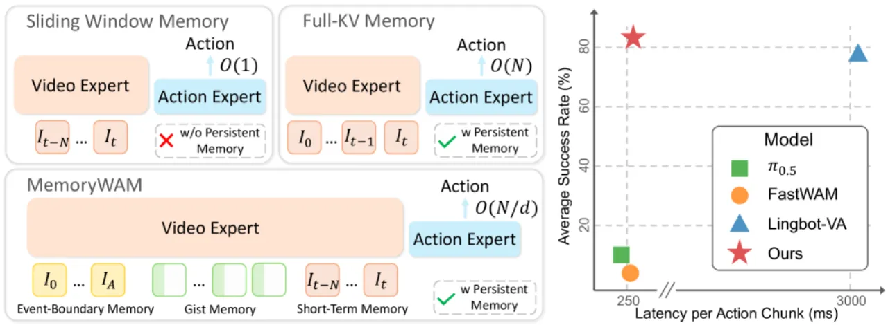
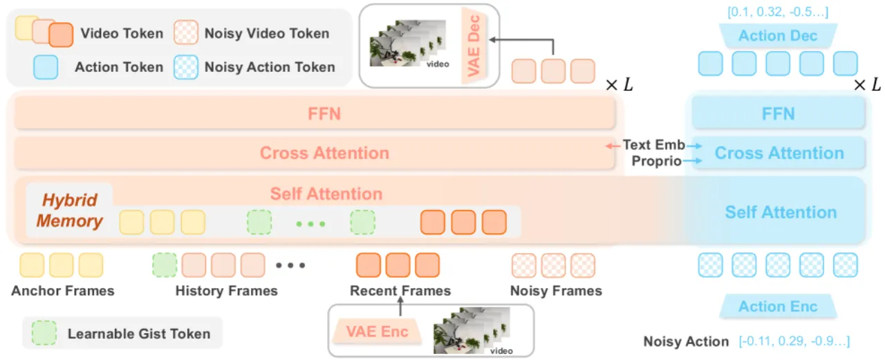
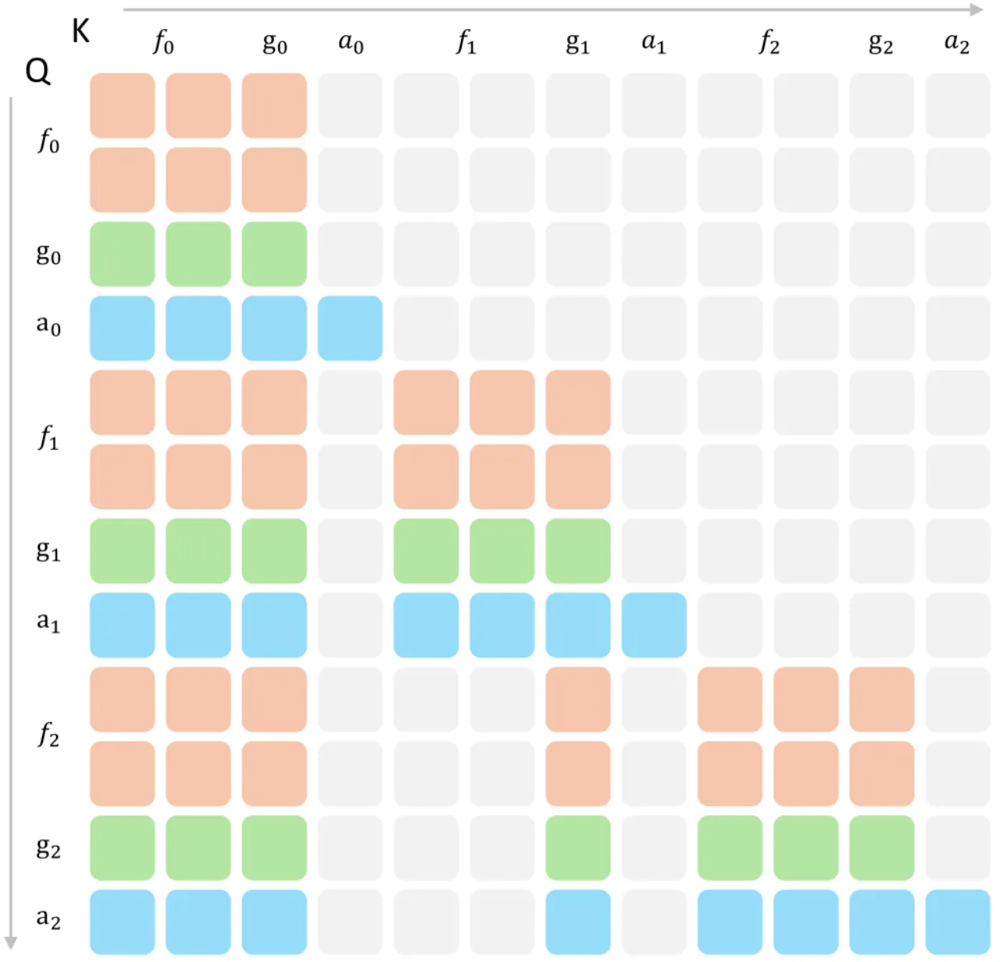
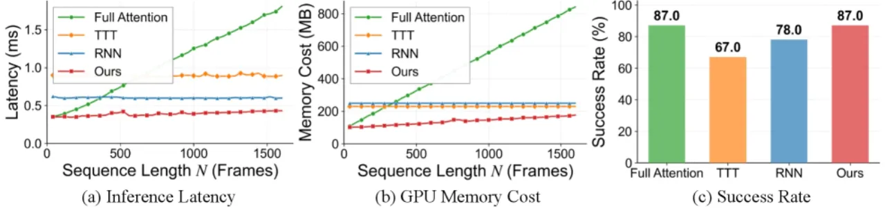
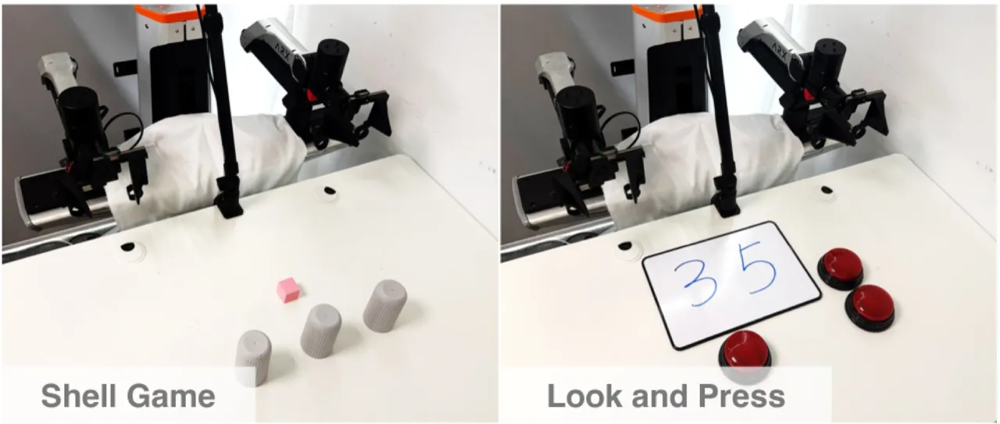

机器人操作的长时序任务中，现有世界行动模型（WAM）面临记忆与效率的根本矛盾：滑动窗口方法推理高效但遗忘长程上下文，全历史 KV 缓存方法具备记忆能力却随序列增长导致延迟与显存急剧上升。MemoryWAM 提出混合记忆设计——近期帧、事件边界锚帧、以及压缩长程历史的 gist token——将推理时间与空间复杂度从 O(N) 降至 O(N/d)，同时在仿真与真实机器人任务中超越强 VLA/WAM 基线。
真实世界中的机器人操作不仅需要理解当前观测，还需要记忆与动态建模。现有 WAM 在高效推理（短窗口）和长历史保留（全 KV 缓存）之间存在不可调和的权衡，导致非 Markov 任务中两类方法均存在显著缺陷。
"Existing WAMs face a fundamental trade-off: methods with efficient inference typically condition only on a bounded window of recent observations and therefore struggle in non-Markovian environments, whereas methods that preserve long histories incur time and space costs that grow substantially with sequence length."

MemoryWAM 以 Mixture-of-Transformers (MoT) 架构为主干，将 video DiT（视觉动态建模）与 action DiT（动作预测）双路并行，并引入三层混合记忆机制，通过定制化注意力掩码实现高效持久上下文检索。

保留最近 N 帧的完整视觉 token，为当前动作规划提供高保真短期上下文。计算量固定为 O(N)（N 为滑窗大小，而非轨迹长度）。
在任务起始等"事件边界"处保留完整视觉 token 作为锚帧，提供关键初始状态信息。灵感来源于认知心理学中事件边界对记忆的高度显著性。
对超出滑窗的远程帧，用少量（可学习的）gist token 对完整 token 序列进行压缩，将每帧 L 个 token 压缩到 L/d 个（d 为压缩比）。推理时仅保留 gist token 的 KV 缓存，丢弃原始帧缓存，将整体历史复杂度从 O(N) 降至 O(N/d)。

MemoryWAM 继承高效 WAM 的核心优势：训练时通过视频预测任务（预测未来帧 z̃_{t+1:t+k}）提供稠密动态监督，推理时跳过视频生成，仅运行 action DiT 完成动作预测。动作 chunk a_{t:t+h-1} 由 action DiT 对带噪声的动作 token x_τ^a 去噪得到，条件为语言指令 l 和累积视频 KV 缓存 C^v_{≤t}。
在 RMBench（长时序记忆依赖操作基准，9 项任务）和真实双臂机器人（ARX + RealSense D455）上评估，与 π₀.₅、FastWAM、LingBot-VA 对比，每项任务 100 次 rollout 统计成功率。

| 任务 | π₀.₅ | FastWAM | LingBot-VA | Ours |
|---|---|---|---|---|
| Observe and Pick Up | 9% | 0% | 13% | 27% |
| Rearrange Blocks | 13% | 0% | 100% | 100% |
| Put Back Block | 11% | 0% | 100% | 100% |
| Swap Blocks | 24% | 0% | 99% | 100% |
| Swap T | 15% | 7% | 88% | 94% |
| Battery Try | 16% | 20% | 41% | 41% |
| Blocks Ranking Try | 6% | 26% | 100% | 100% |
| Cover Blocks | 0% | 0% | 79% | 98% |
| Press Button | 0% | 0% | 84% | 87% |
| Average | 10.4% | 5.9% | 78.2% | 83.0% |
短窗口方法（π₀.₅、FastWAM）在记忆依赖任务上大量失败（平均 <11%）。MemoryWAM 平均成功率比全历史 KV 缓存的 LingBot-VA 高 4.8 个百分点，且在每项任务上均达到领先或持平。

| 任务 | π₀.₅ | LingBot-VA | Ours |
|---|---|---|---|
| Shell Game | 5/20 | 13/20 | 18/20 |
| Look and Press | 0/20 | 14/20 | 15/20 |
真实机器人上 MemoryWAM 两项任务均最优。值得注意的是，LingBot-VA 高推理延迟导致其在 Shell Game 中错过杯子交换时机而失败——印证了效率本身也是操作性能的组成部分。
去除 gist token 导致最大性能下降，说明长程历史压缩是记忆依赖决策的核心。去除锚帧或滑窗均降低性能，证明三类记忆提供互补收益。Full Attention（保留所有历史）性能反而弱于混合记忆，说明"密集历史并非最优"——冗余信息增加检索难度。消融结论："MemoryWAM's hybrid memory design is not merely an efficiency-oriented compromise, but an effective memory structure."
gist token 压缩比 d 在训练前固定，无法自适应任务难度或历史重要性动态调整。对于信息密度不均匀的轨迹，固定压缩可能导致部分关键帧被过度压缩或欠压缩。
当前方案以任务初始帧作为锚帧（"initial observations of a task"），需预先知道任务开始时刻。对于无明确起点或多阶段混合的连续操作场景，锚帧定义可能不够通用。
真实机器人实验每任务仅 20 次 rollout，演示数据分别为 50（Shell Game）和 100（Look and Press）条。样本量相对较小，泛化性结论需更大规模验证。